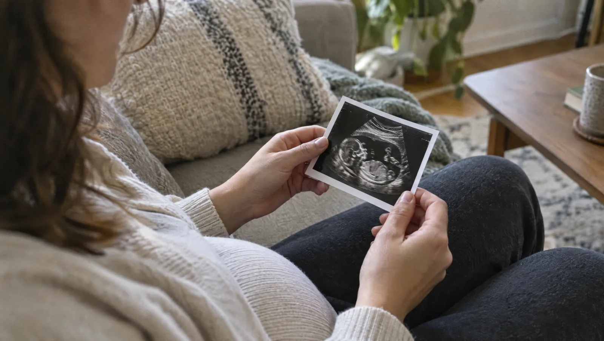

Kısaca
- İlk kontrol için uygun dönem çoğunlukla son adetten sonraki 6-8. haftalardır
- Erken ultrason kesenin yerini, kalp atımını ve gebelik haftasını netleştirir
- Kan grubu, kan sayımı ve idrar tahlili ilk ziyaretin temel testleridir
- Sağlık Bakanlığı en az dört doğum öncesi kontrol önerir; ilki 14. haftadan önce
- Kanama ve şiddetli kasık ağrısında randevu beklemeyin
İlk kontrole hangi haftada gitmelisiniz?
Hekimler gebelik haftasını son adetinizin ilk gününden başlatarak hesaplar. Şikâyetiniz yoksa ilk kontrol için uygun dönem çoğunlukla 6-8. haftalardır. Çünkü çok erken bir muayenede kalp atımı henüz seçilemeyebilir. Bu da gereksiz kaygıya ve kısa süre sonra yeni bir randevuya yol açar. Kanama ya da ağrı varsa haftayı beklemeyin.
Ev testi pozitif çıktıysa bir de kan testi yaptırmanız şart değildir. Hekiminiz gerekli görürse kanda beta hCG düzeyine bakar. Bu değer, özellikle kesenin henüz görünmediği erken haftalarda yol gösterir. Örneğin iki gün arayla yapılan ölçümler, değerin olması gerektiği gibi artıp artmadığını ortaya koyar.
İlk ultrason neyi gösterir?
Erken haftalarda hekim ultrasonu çoğunlukla vajinal yoldan yapar. Çünkü rahim henüz küçüktür ve görüntü bu yolla daha nettir. Önce gebelik kesesinin rahim içinde olup olmadığına bakar. Sonra embriyonun boyunu ölçer ve kalp atımını arar. Böylece bebeğin kaç haftalık olduğu ve beklenen doğum tarihi netleşir.
- Son adet tarihi
- Gebelik haftasının başlangıç noktası. Hesap, döllenmeden yaklaşık iki hafta önceki bu günden başlar.
- Gebelik kesesi
- Embriyoyu çevreleyen sıvı dolu boşluk. Hekim ilk ultrasonda bu kesenin rahim içinde olduğunu doğrular.
- Baş-popo mesafesi (CRL)
- Embriyonun başından kuyruk sokumuna uzanan boyu. İlk üç ayda gebelik haftasını en doğru gösteren ölçümdür.
- Rh uyuşmazlığı
- Anne Rh negatif, bebek Rh pozitif olduğunda gelişebilen durum. Kan grubu testi bu ihtimali ilk ziyarette ortaya koyar.
Kesenin göründüğü ama kalp atımının henüz seçilemediği bir muayeneden sonra paniğe kapılmayın. Örneğin yumurtlama geç olduysa gebelik hesaplanandan daha yeni olabilir. Hekiminiz bu durumda genellikle 7-10 gün sonra yeni bir ultrason planlar. Bu bekleme süresi, iki ölçüm arasındaki gelişmeyi görmek için gereklidir.
İlk kontrolün tahlil listesinde neler var?
Kan ve idrar tahlilleri, gebelik boyunca kullanılacak başlangıç değerlerini ortaya koyar. Böylece hekiminiz kansızlığı, kan grubu uyuşmazlığını ya da fark edilmemiş bir enfeksiyonu erken görür. Bazı testler her gebede rutindir. Diğerlerini ise hekiminiz yaşınıza, öykünüze ve muayene bulgularınıza göre ekler.
- Kan grubu ve Rh faktörü
- Tam kan sayımı
- Açlık kan şekeri
- Tam idrar tahlili, gerekirse idrar kültürü
- Tiroit testi (TSH)
- Hepatit B, frengi ve HIV gibi enfeksiyon taramaları
- Kızamıkçık bağışıklığının kontrolü
Bebekte kromozom farklılıklarının riskini hesaplayan ikili tarama 11-14. haftalar arasına denk gelir. Tarihini ilk kontrolde birlikte planlamak işinizi kolaylaştırır.
Gebelik boyunca kontroller nasıl ilerler?
Sağlık Bakanlığı'nın doğum öncesi bakım rehberi, sorunsuz bir gebelikte en az dört kontrol önerir. İlki 14. haftadan önce yapılmalıdır. Öte yandan pek çok kadın doğum hekimi daha sık görüşmeyi tercih eder. Aşağıdaki tablo, ilk kontrolden sonra sık planlanan incelemeleri haftalarına göre özetler.
| Gebelik haftası | Planlanan inceleme | Amacı |
|---|---|---|
| 6-8 | İlk muayene ve ultrason | Kesenin yeri, kalp atımı, gebelik haftası |
| 11-14 | İkili tarama ve ense kalınlığı ölçümü | Kromozom farklılıkları için risk hesabı |
| 18-22 | Ayrıntılı ultrason | Bebeğin organlarına sistemli bakış |
| 24-28 | Şeker yükleme testi | Gebelik şekerinin araştırılması |
| Son haftalar | Ultrason ve gerekirse NST | Bebeğin iyilik hali ve doğum planı |
Bu takvim herkes için aynı değildir. Yüksek tansiyon, ikiz gebelik ya da önceki gebelikte yaşanan bir sorun varsa hekiminiz kontrolleri sıklaştırır. Üstelik her ziyarette tansiyonunuza ve kilonuza bakar, gerekirse idrarda protein arar. Böylece gebelik zehirlenmesi gibi sorunları erken yakalamak mümkün olur.
Hangi belirtilerde randevuyu beklememelisiniz?
Erken gebelikte hafif kasık gerginliği ve az miktarda lekelenme sık rastlanan şikâyetlerdir. Yine de bazı belirtiler rahim dışı gebelik ya da düşük tehdidi gibi durumlara işaret edebilir. Böyle belirtiler gecikmeye gelmez. Bu yüzden ilk ultrason henüz yapılmadıysa daha dikkatli olun, çünkü gebeliğin yeri henüz belli değildir.
Bir tarafta şiddetli kasık ağrısı, omuza vuran ağrı ya da bayılma hissi varsa beklemeyin. Baş dönmesi ve ped dolduracak kadar kanama da acil bir durumdur. Zaman kaybetmeden 112'yi çağırın; acil servisimizin kapısı da günün her saati açık.
İlk kontrolden önce neleri hazırlamalısınız?
Küçük bir hazırlık, görüşmenin süresini sorularınıza ayırmanızı sağlar. Çünkü hekimin soracağı bilgilerin çoğu tarih ve ilaç adı gibi ayrıntılardır. Bu yüzden önceden yazmak, muayene heyecanıyla unutma riskini azaltır. Eşiniz ya da bir yakınınız da sizinle gelebilir; aklınıza takılanları birlikte not edebilirsiniz.
- Önce son adetinizin ilk gününü takvimden bulun.
- Gebelik testi sonucunuzu ve varsa beta hCG değerini yanınıza alın.
- Kullandığınız ilaç ve vitaminlerin adlarını yazın; hekiminize sormadan hiçbirini bırakmayın.
- Önceki gebelik, düşük ya da ameliyat bilgilerinizi hazırlayın.
- Ailenizdeki şeker, tansiyon ve kalıtsal hastalıkları öğrenin.
- Sonra sorularınızı bir listeye dökün ve muayenede sırayla sorun.
İlk muayeneye dair sorular
Vajinal ultrason bebeğe zarar verir mi?
Hayır, zarar vermez. Prob vajinanın alt kısmına yerleşir ve rahim ağzına uzanmaz. İnceleme birkaç dakika sürer; düşük riskini artırdığına dair bir bulgu yoktur. Hafif bir baskı hissetmeniz normaldir.
Kan grubum Rh negatif çıktı, ne yapmalıyım?
Endişelenmeyin; bu durumla sık karşılaşırız ve izlemesi kolaydır. Hekiminiz kanınızda bebeğe karşı antikor oluşup oluşmadığını gösteren bir test ister. Gerekirse gebeliğin belirli haftalarında ve doğumdan sonra koruyucu bir iğne gündeme gelir. Eşinizin kan grubunu bilmek de değerlendirmeyi kolaylaştırır. Önceki gebeliklerinizde bu iğneyi olup olmadığınızı biliyorsanız hekiminize söyleyin.
Bulantı yüzünden tahlile aç gelemezsem ne olur?
İlk kontrol tahlillerinin çoğu için açlık gerekmez. Açlık kan şekeri istendiyse sabah erken kan verip hemen ardından hafif bir şeyler yiyebilirsiniz. Yanınıza kraker ya da kuru bir atıştırmalık alın. Sabahları yataktan kalkmadan birkaç kraker yemek bazı kadınlarda bulantıyı hafifletir. Gün içinde az ve sık yemek de mideyi rahatlatır. Kusmalar gün boyu sürüyor ve su bile içemiyorsanız hekiminize hemen haber verin. Çünkü sıvı kaybı tedavi gerektirebilir. İdrarınızın koyulaşması ve azalması da sıvı kaybının işaretidir.
Takip sürecinde merak edilenler
Eşim kontrollere katılabilir mi?
Evet, katılabilir. Ultrason sırasında yanınızda olması pek çok aile için anlamlıdır. Sorularınızı birlikte hazırlamanız da görüşmeyi verimli kılar. Bebeğin kalp atımını ilk kez birlikte duymak çoğu çift için unutulmaz bir deneyimdir.
Gebelikte spora devam edebilir miyim?
Sorunsuz bir gebelikte yürüyüş ve yüzme gibi orta tempolu hareketler çoğu zaman sürdürülebilir. Düşme ya da karına darbe riski taşıyan sporlardan uzak durun. Kanama, ağrı ya da erken doğum öyküsü varsa hekiminiz size özel bir plan çizer.
İkili tarama sonucu riskli çıkarsa ne olur?
İkili tarama bir tanı testi değil, risk hesabıdır. Riskli çıkması bebekte sorun olduğu anlamına gelmez; yalnızca ek değerlendirme gerektiğini gösterir. Hekiminiz bu durumda sonraki adımları, tanı koyduran testlerin yararını ve sınırlarını sizinle ayrıntılı konuşur. Kararı bu görüşmeden sonra, acele etmeden verirsiniz.
Kaynaklar
Bu yazıyı Op. Dr. Feride Karataş gözden geçirdi. Yayın tarihi: 23 Eylül 2026. Yazı genel bilgilendirme içindir, muayenenin yerini tutmaz.